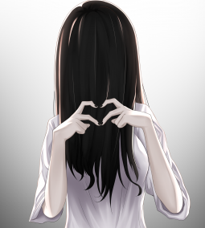
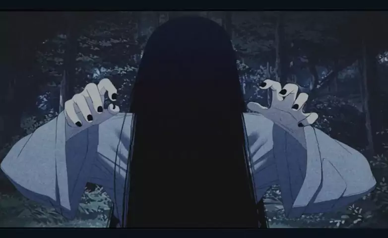
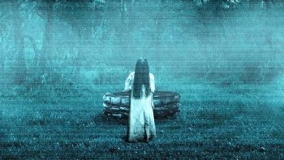
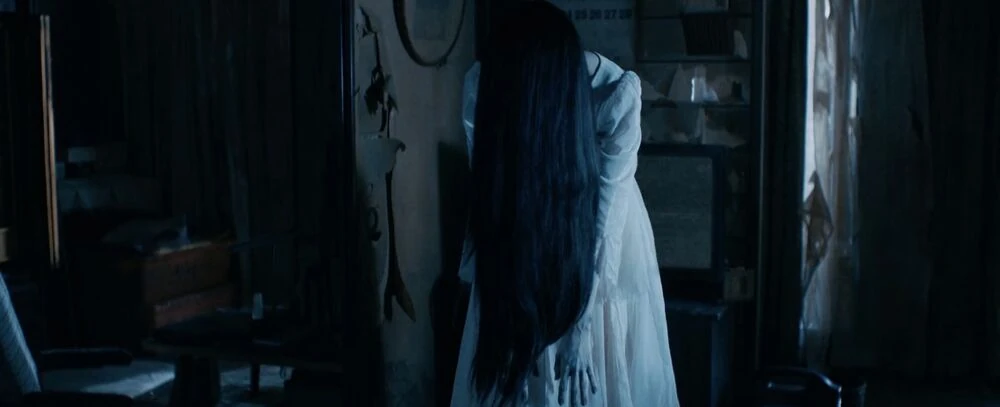
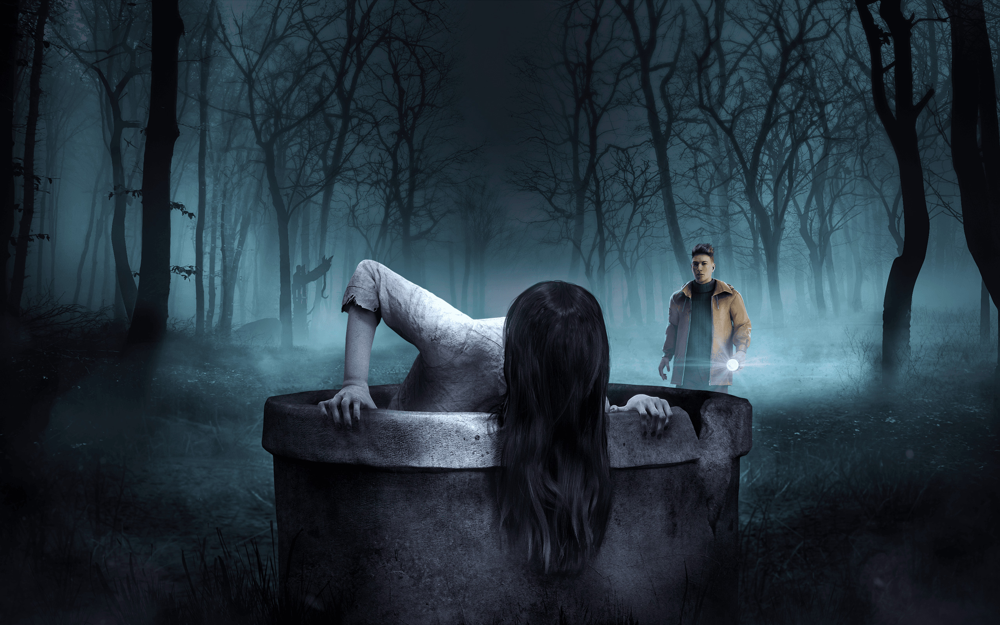
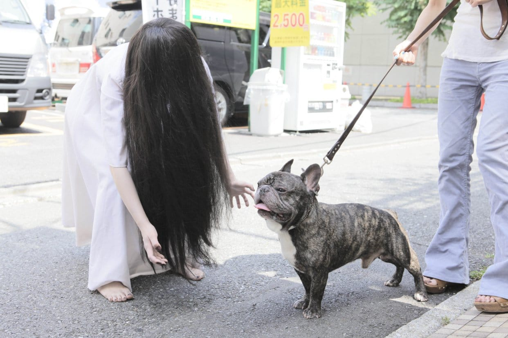
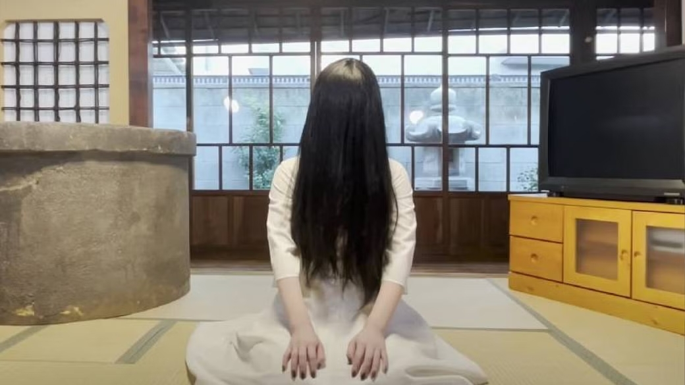
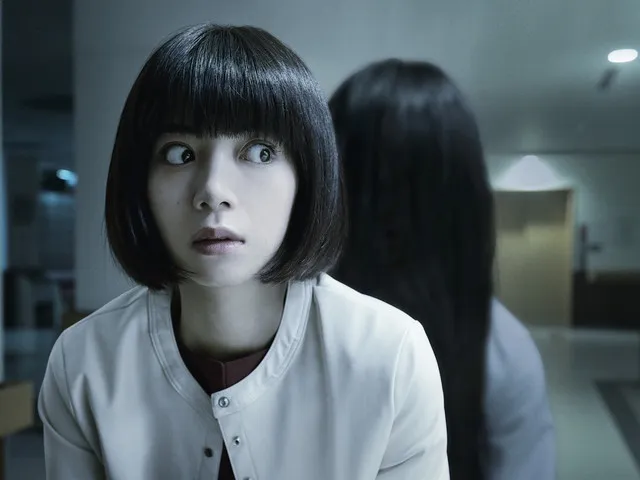
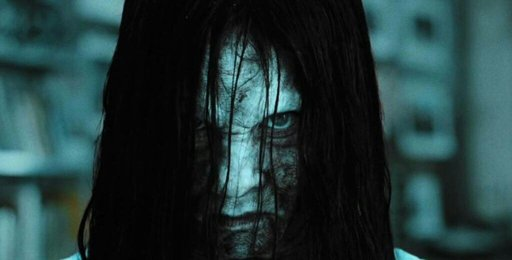

Home
Galeria
Pesquise por imagens, coleções ou maldições

Galeria
Uma tarde de sábado qualquer
Blogueirinha

Fanart dos seguimores ♡
Fanart

📺 Visitando meus fãs
Cursed Video

Como eu era novinha em 1998! Enfim, envelheci como vinho 🍷
Ringu

Job para o game "Dead by Daylight". Sinto que sou uma estrela 🥰
video game

Doguinhos é tudo de bom! Queria levar para casa, mas não sei se ele iria gostar de ficar no poço comigo 😍
Luisa Mell

Vocês sabiam que também tenho um canal no YouTube? Sim, oficialmente sou uma Youtuber, yay 😄
youtube
inscreva-se

Pregando uma peça na minha amiga Hatsuko-chan ğŸ¤
prank
#brincalhona

Minha irmãzinha, Samara Morgan, é uma fofa, não é? Sempre tão doce como um anjo 😍
Samara Morgan
Family is forever